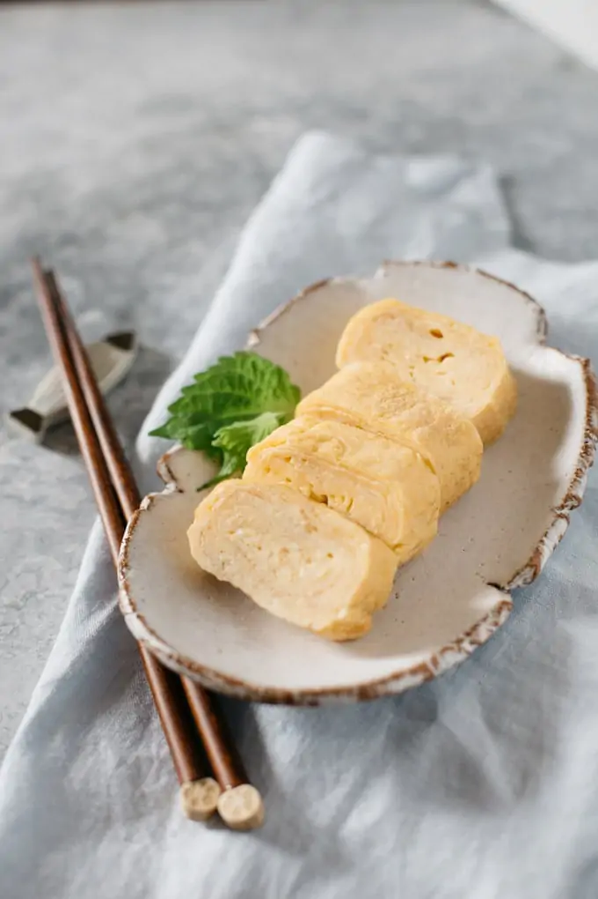
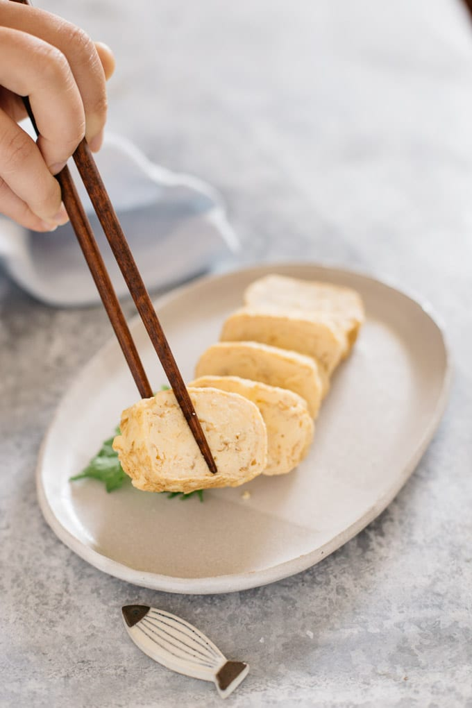

Japanese Tamagoyaki Rolled Egg Recipe


⌛ 15 Minutes
Source = Chopstick Chronicles
Description
Tamagoyaki is a fluffy and bouncy Japanese rolled egg which ranks in the list of the top 30 Japanese foods tourists come to Japan for. It is a commmon street food and can be seen served on skewers called “Kushidama” in major cities such as Tokyo. Interestingly, the name comes from Tamago meaning egg and yaki meaning fry in Japanese, and it is sometimes even used in sushi! There is special square or rectangle shaped frying pan for only rolling eggs, called “Tamagoyakiki”, but luckily alternative methods for cooking are available for foreigners. But you do not have to go all the way to Japan to try it, it is quick and simple to make at home too!
Ingredients
- 3 eggs
- 2 tsp sugar
- 1/2 tsp salt
- 1 tsp olive oil
- 2 tbsp water
- 2 tbsp oil
Steps
- Crack the eggs into a medium sized mixing bowl.
- Add the seasoning of salt and water into the bowl and mix them all together gently to avoid too much bubble forming.
- Strain the egg mixture through a sieve a few times.
- Pour the oil into a small bowl and soak some kitchen paper before setting it aside.
- Heat the olive oil in the frying pan over medium heat until you can feel the heat when you hover your hand over the pan.
- Pour roughly one third of the egg mixture into the pan, after which you should hear a sizzling sound.
- Break any bubbles that have formed with the edge of the chopsticks and scramble the mixture gently.
- When the surface has solidified a little, fold and push the egg to one end of the pan with chopsticks. Don't worry if the egg is half cooked, it will be cooked through with residual heat when the rolled egg is resting in the sushi mat.
- Wipe the empty side of the pan with oil-soaked kitchen paper and pour another third of the egg mixture into the empty space of the pan.
- Lift the folded egg up to let the egg mixture run under it.
- Fold and roll the egg from one side of the pan and wipe the empty space of the pan with the oil-soaked kitchen paper.
- Pour the last third of egg mixture and repeat the fold and roll technique.
- Turn the heat off and wrap the rolled egg with some thin kitchen towel.
- Roll the wrapped egg roll with a sushi mat to shape and rest to cool down. You can place the sushi roll mat on two chopsticks, as it will make air flow underneath to avoid the egg become soggy with steam.
- Once it has cooled down, slice it into 2cm thick pieces and serve immediately. Enjoy!